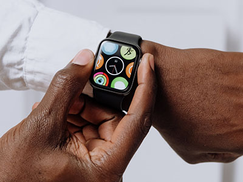
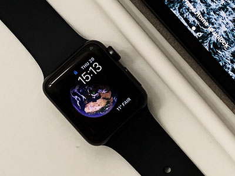
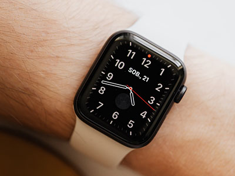

Les high-tech
Nous sommes tellement passionnés de mécanique horlogère que nous avons trop facilement tendance à oublier toutes les technologies qui ont fait leur nid sur le marché de la montre. Après avoir passé en revue des montres hybrides ou encore connectées, nous avons mis la main sur une montre signée Citizen qui combine deux innovations uniques : Eco-Drive et Satellite Wave.

Les élégantes
La montre est indiscutablement un basique du vestiaire masculin, l’accessoire viril incontournable de la mode masculine, sur lequel s‘appuyer pour parfaire son look. Comment choisir une montre pour homme qui convient à sa personnalité ? Quels critères prendre en compte pour ne pas se tromper ?
Nous avons à cœur de simplifier votre choix par quelques conseils pratiques et suggestions.

Les classiques
L’affichage de l’heure analogique en horlogerie est l’affichage le plus couramment utilisé depuis plusieurs siècles. Les montres analogiques ont un système d’indicateur de temps qui se fait par l’intermédiaire du déplacement des aiguilles sur un cadran. De plus en plus l’affichage numérique de l’heure utilise le principe des trois aiguilles (pour les heures, les minutes et les secondes).